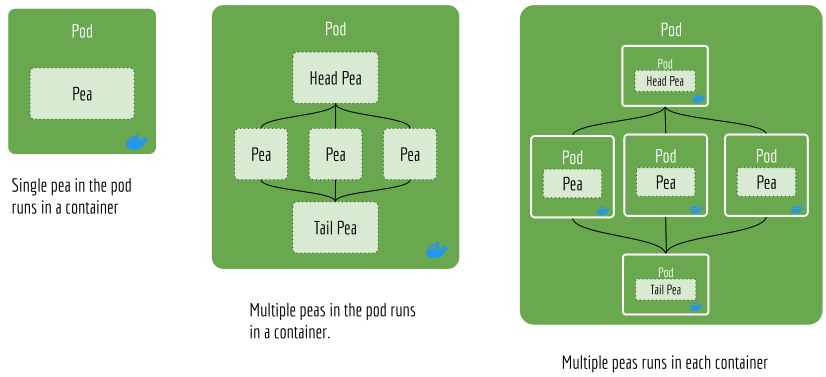

fionn_test
Table of Contents
JEP 2 — Supporting Docker Container in Flow API
Abstract
Motivation
Rationale
Can we support remote Pod in the Flow API?
Run pods in their own container
New CLI argument
Specification
A minimum Jina Docker Contianer
Backwards Compatibility
Han Xiao (han.xiao@jina.ai)
Feb. 29, 2020
Draft
@c66b4b9
TBA
https://github.com/jina-ai/jina/issues/33
We describe why and how we make jina.flow to support Docker container.
jina.flow
jina.flow serves as the primary interface for Jina’s new users. It provides a set of friendly, easy-to-use API to organize a flow of microservices (aka, jina.peapods.pod.Pod). It also provides basic orchestration abilities, such as start, scale up, flow pruning and terminate. This saves user quite some time as they would otherwise launch each jina.peapods.pod.Pod and connect them manually.
jina.peapods.pod.Pod
In the current version, jina.flow.Flow supports jina.flow.Flow.add() to allow user to define their own “graph” by specifying send_to, recv_from. The jina.flow.Flow later uses jina.flow.Flow.build() method and connects all the Pod together. All sockets assignment are hidden from the user perspective.
jina.flow.Flow
jina.flow.Flow.add()
send_to
recv_from
jina.flow.Flow.build()
Pod
One of the big limitations of the current jina.flow.Flow is it does not support containerization, either partial or wholly. Imagine a user needs to run a jina.peapods.pod.Pod in a container because of the complicated dependencies it relies on. The current jina.flow.Flow can not do that. All jina.peapods.pod.Pod are either run as a thread or process. This is in fact a common requirement as most of the DL/AI libraries do require specific versions of the DL package or complicated dependencies. Promoting the idea of “Model-as-Docker” and encouraging users to adapt to this idea not only solves the dependency issue, but also serves as preliminary education to our Jina Hub.
To add containerization feature to the jina.flow.Flow, we first need to understand what are the common use cases.
This is already supported in the current version
This should be supported but not tested. For the sake of security, this should not be encouraged.
This is a common use case, either locally or remotely.
No clear usage. May need to design the API separately
This is a special case of “some pods run outside of the container”.
As one can observe from the list, designing an API that allows Pods running locally or remotely, inside or outside the container is the key of this JEP. Imagine we add two new arguments when spawning each pod, host and image. Note that these two arguments should not be added to the arguments of jina.peapods.pod.Pod but to jina.flow.Flow.add().
host
image
Let’s first look at host argument. Supposedly,
One immediate problem is that jina.flow.Flow has no way to start this Pod remotely on 192.168.1.20. To achieve, all remote workers need to register themselves or keep a daemon in the background, waiting the “master” Flow sending a “spawning” signal to them so they can start. We have no intention to implement such mechanism right now. This is completely out of the scope of the Flow API and seems reinventing the orchestration layer of Kubernetes or Docker Swarm.
192.168.1.20
Assuming the Pod is started already on the host, then writing host as an argument of jina.flow.Flow.add() can make it accessible to other Pods. This looks true at first, but look at the example below:
f = (Flow().add(name='p1', host='192.168.0.2') .add(name='p2', host='192.168.0.3') .join(['p1', 'p2'])) # -> p3
In the example, p3 is blocking the flow until p1 and p2 are all done. p3 is on the “bind” side, p1 and p2 are on the “connect” side. Therefore, it is in fact p3 who needs to expose its IP to p1 and p2 to make sure p1.host_out = p3.host and p2.host_out = p3.host, not in the other way. Simply put, the host argument of p1 and p2 is useless in this case. Besides that, as p1 and p2 are already running in remote (manually), their host_out is not changeable by the Flow. This simple use case is not even possible if the Flow can not spawn Pod remotely.
p1.host_out = p3.host
p2.host_out = p3.host
host_out
So what can we support? If a remote pod is on the “bind” side, and the local pods are on the “connect” side, then this works fine. Though in this case we can simply use the existing host_in, host_out. For example,
host_in
f = (Flow().add(name='p1') # -> p1 running remotely on 192.168.0.2 .add(name='p2', host_in='192.168.0.2') )
That is, in the current Flow API a remote pod must be “bind” on both input socket and output socket. Otherwise, its “connect” socket must be specified with an IP address that is manually given when spawning.
Note, it is difficult to guarantee a “bi-bind” Pod in an arbitrary flow. Depending on the topology, the input/output socket may switch the role between “bind” and “connect”. Implementing heuristics to maximize the chance that a remote Pod enjoys “bi-bind” may be possible, but is tedious and not very cost-effective.
As the conclusion, we decide not to support remote Pod in this JEP. All pods are limited to run locally.
First, we may need a good naming convention for the image tag. This needs to be discussed separately.
Let’s look at the following example:
f = (Flow().add(name='p1', uses='./encode.yml', image='jina-encoder:cv-blah') # -> p1 runs in the container .add(name='p2'))
All keyword arguments of p1 now forward to jina-encoder:cv-blah. So instead of running process/thread in
jina-encoder:cv-blah
It should run the Pod via docker run -v jina-encoder:cv-blah --name p1 --yaml_path ./encode.yml.
But how to handle multiple replicas?
Note a Pod can contain multiple Peas when --replicas > 1. If a Pod is wrapped in a container, then that means all its Peas, including the head and tail are all running in the container.
--replicas > 1
This poses a problem. The head and tail of a Pod can be eliminated during the jina.flow.Flow.build(). The structure of a Pod is “broken” because of this. We can of course omit the heuristic of topology optimization when image and replicas are both set. But before that, let’s first think what does it mean when a user specify replicas and image at the same time. Does it mean running one container but having replicas number of peas inside the container, or does it mean running replicas number of containers? The following figure illustrates the difference.
replicas

In the Docker documentation, replicas is defined as “the number of containers that should be running at any given time”. We follow this definition and choose the last interpretation in the figure above. This should offer us more flexibility and consistency with Docker and Kubernetes API.
Each container contains a ``Pea``, not a ``Pod``, therefore a ``Pea`` should provide a CLI with the some additional argument.
These lines should start Docker containers with args followed.
The Pod will inherit these CLI arguments.
..confval:: hostname
Useful when the current Pea socket is BIND and other Peas CONNECT to it, a remote IP address (72.214.121.283), remote The DNS name (e.g. encoder-1), local/remote 0.0.0.0, local host.docker.internal, local type str
Useful when the current Pea socket is BIND and other Peas CONNECT to it,
BIND
CONNECT
a remote IP address (72.214.121.283), remote
The DNS name (e.g. encoder-1), local/remote
0.0.0.0, local
host.docker.internal, local
str
..confval:: remote
To tell if the Pea is running remotely or locally type bool
To tell if the Pea is running remotely or locally
bool
If the socket_type is BIND, then it is always bind to tcp://0.0.0.0:port. The key problem is to determine the host_in and host_out when the socket_type is CONNECT.
socket_type
tcp://0.0.0.0:port
Logic when connecting, the Pea that opens a BIND socket is Server, and the Pea connects to it as Client:
Local
Remote
Docker
Host Thread/Process
host.docker.internal*
host.docker.internal
hostname_of_BIND
0.0.0.0
Same Remote? Then follow local-local
Different Remote?Then follow remote-local